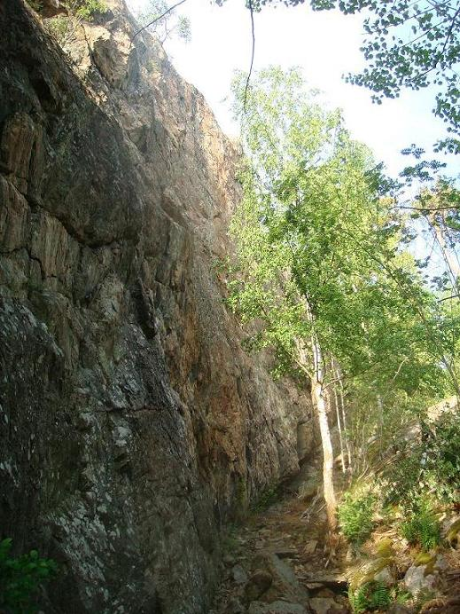

Lat: 59.044369 Long: 17.747792
Klippa nära
Vårdbergets
nedre parkering. Ligger ca 500 m nordväst om Vårdberget ett par stenkast från Himmerfjärden. Klippan är brantare och högre än Vårdberget men också grepprikare. Ett bra alternativ när det är fullt på "vanliga" vårdberget.
Lämplig även för barnklättring.
Det är numer en bom vid T-korset vilket förhindrar högersväng och vidare bilfärd till grustaget. Det finns en ficka precis innan T-korset där man kan stå. Alternativt parkera enligt anvisningar för
Vårdberget
.
Klippan är betydligt "yngre" än Vårdberget och bjuder på mycket god friktion och en hel del riktigt vassa grepp och kanter. Klippan fick en renovering våren/sommaren -08. Många nya borrbultar och toppankare sattes upp. Det är fortfarande inte helt ovanligt att det lossnar sten så den försiktige säkraren har på sig hjälm.
Väggen ligger jämfört med stora Vårdberget mer skuggat och det blir inte lika kokhett här när solen ligger på. Utsikten får jämfört med storebror betraktas som begränsad.
En liten brant vägg/block ligger framför klippan. På väggen finns en lätt travers av utmärkt kvalitet.
VARNING!
På leden Ombyte förnöjer finns ett löst block, i storlek som nedersta skrivbordslådan. Det utgör också ett naturligt men inte oundgängligt grepp så det finns viss risk att man river ned det. Bör tas ned snarast vid ett tillfälle då få klättrare finns på plats. Det finns där leden är en aning flackare efter 6:e bulten. Lite allmänt rekommenderas hjälm, särskilt för de som säkrar.
Blocket rensat 090829. Påverkar inte graden då leden egentligen går till höger om diedersystemet. Varningen kan gott stå kvar ändå. Klippan är bra rensad om man håller sig till lederna, men off-route finns en del obehagligt och löst liggande stenar.
Det finns ett toppankare på varje led i form av dubbla bultar med firningsring i ena (-08). Flera av ankarna går lätt att komma åt uppifrån. Alla leder utom två är helbultade och bultarna är i mycket gott skick.
Kategori:Stockholm
Kategori:Fituna
Kategori:Sport
Copyright (C) Permission is granted to copy, distribute and/or modify this document under the terms of the GNU Free Documentation License, Version 1.3